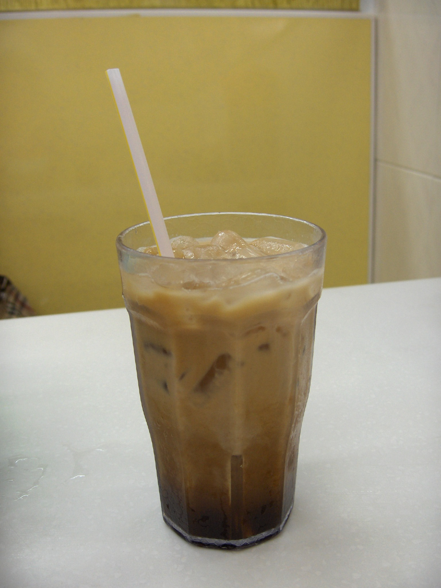

Yuenyeung Recipe

A yuengyeung is a drink originated in Hong Kong. It is created by mixing brewed coffee and black tea with sugar and evaporated milk. This recipe substitutes brewed coffee for a double shot of espresso and uses condensed milk for sweetner alongisde evaporated milk. This recipe creates 1 serving.
Ingredients
- 2 ceylon tea bags
- double shot espresso (18 gram coffee beans to 40 grams espresso shot used in recipe)
- 20% ratio evaporated milk to water (40 grams to 200 grams of water)
- 20% ratio condensed milk to water (40 grams to 200 grams of water)
- Brew 2 ceylon tea bags in 200 grams of boiling water for 4 minutes
- Remove tea bags after 4 minutes and add evaporated milk and condensed milk
- Add espresso
- Optional for cold drink: add ice